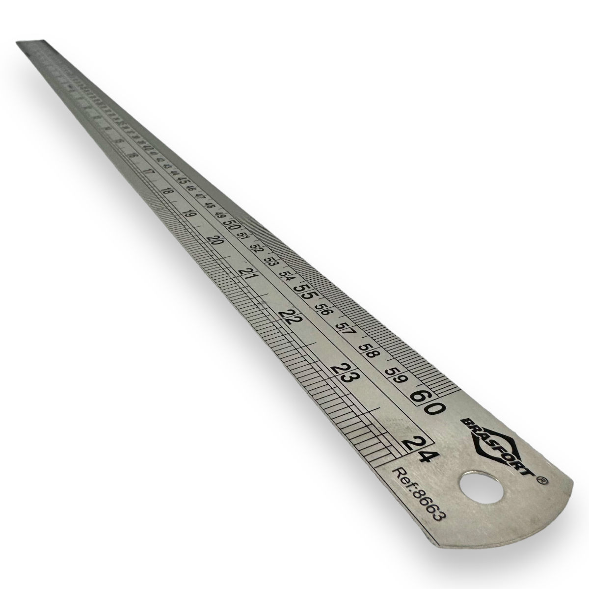
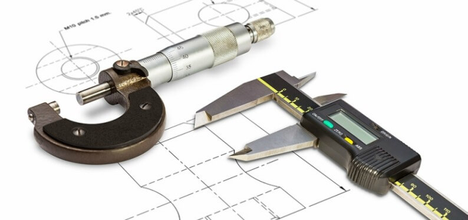
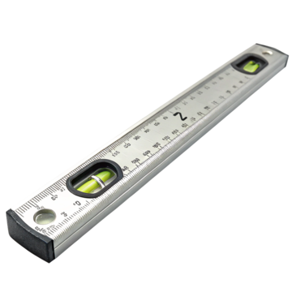
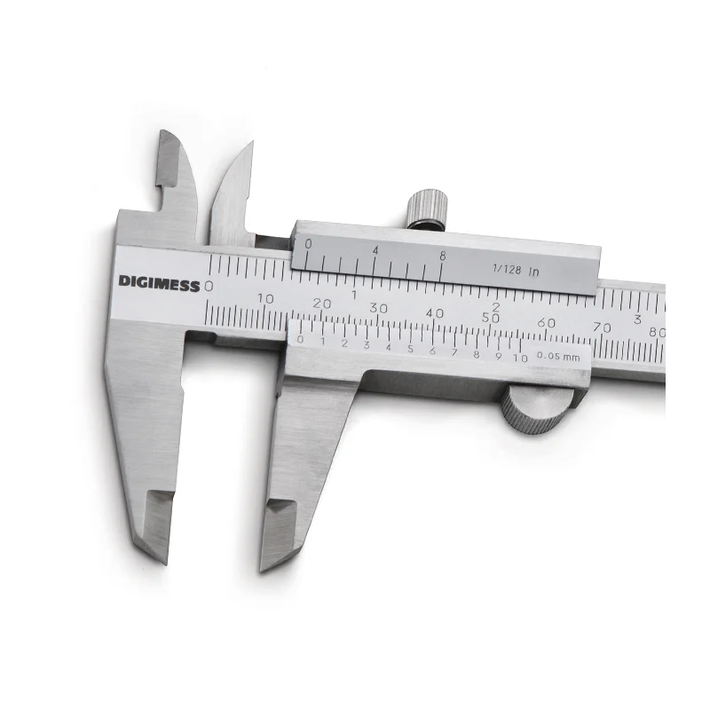
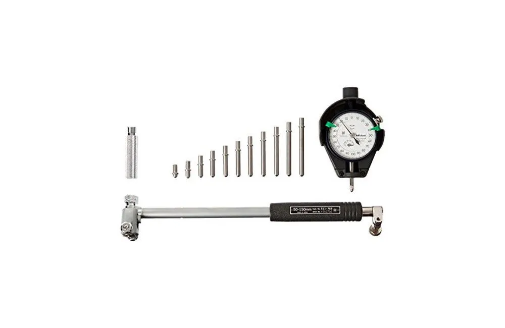
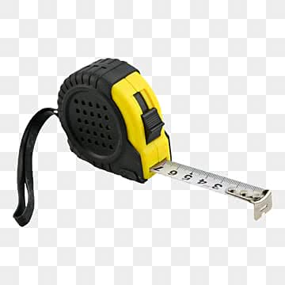
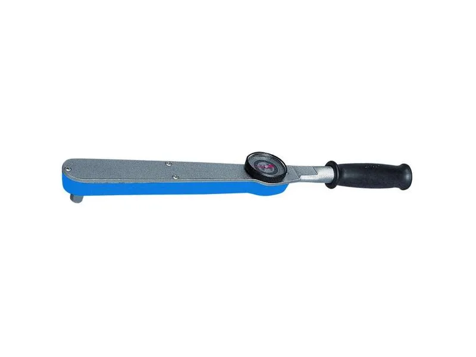
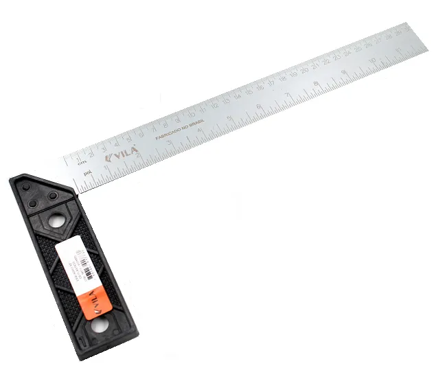

Instrumentos de Medição
Mecânica

O que são Instrumentos de Medição?
Instrumentos de Medição são dispositivos utilizados para determinar valores de grandezas físicas, como temperatura, pressão, vazão, entre outras. Eles são essenciais em diversos setores industriais e técnicos, permitindo o controle e a análise precisa dos processos.
Quais os instrumentos de medição utilizados na mecânica?

Micrômetro

Nível

Paquímetro

Relógio Comparador

Súbito

Trena

Torquímetro

Calibre de Folga

Esquadro
Escala
Ferramenta simples para medir comprimentos básicos
- Baixa precisão
- Facil de usar
- Não indicada para medidas técnicas exigentes
Micrômetro
Instrumento de alta precisão para medir pequenas distâncias
- Capaz de medir com precisão de até 0,01 mm
- Usado para medir peças pequenas e detalhes finos
- Tem um parafuso micrométrico que permite ajustes precisos
Nível
Ferramenta para verificar a horizontalidade ou verticalidade
- Contém um tubo com líquido e uma bolha de ar
- Usado para garantir que superfícies estejam niveladas
- Essencial para montagem e alinhamento de máquinas
Paquímetro
Instrumento versátil que mede distâncias com precisão moderada
- Diâmetro externo
- Diâmetro interno
- Profundidade
Tem três partes principais
- Parte fixa: tem a escala principal
- Parte móvel: tem a escala secundária
- Parafuso de trava: mantém a parte móvel no lugar
Relógio Comparador
Instrumento para medir pequenas variações de posição
- Tem um ponteiro que se move em um mostrador circular
- Usado para comparar a posição de uma peça com um padrão
- Essencial para controle de qualidade e alinhamento
Súbito
(ou comparador de diâmetro interno) é um instrumento de medição de alta precisão utilizado para verificar diâmetros internos, ovalização e conicidade de furos
- Tem um corpo principal com um parafuso micrométrico e uma haste de medição
- Usado para medir diâmetros internos de peças como cilindros e buchas
- Permite ajustes precisos para obter medições exatas
Trena
Instrumento de medição de comprimento utilizado para medir distâncias maiores
- Tem uma fita metálica ou de fibra que pode ser estendida
- Usada para medir distâncias em obras, terrenos e grandes peças
- Disponível em diferentes comprimentos, como 5m, 10m, 30m, etc.
Torquímetro
Instrumento utilizado para medir o torque aplicado a um parafuso ou porca
- Tem um mecanismo que indica a quantidade de torque aplicada
- Usado para garantir que parafusos sejam apertados com a força correta
- Essencial para segurança e desempenho de máquinas e veículos
Calibre de Folga
Instrumento utilizado para medir a folga entre peças, como rolamentos e eixos
- Consiste em uma série de lâminas de metal de diferentes espessuras
- Usado para verificar a folga entre peças móveis
- Essencial para manutenção e ajuste de máquinas
Esquadro
Instrumento utilizado para verificar a perpendicularidade entre superfícies
- Tem um formato de L com um ângulo de 90 graus
- Usado para garantir que peças estejam alinhadas corretamente
- Essencial para montagem e fabricação de peças